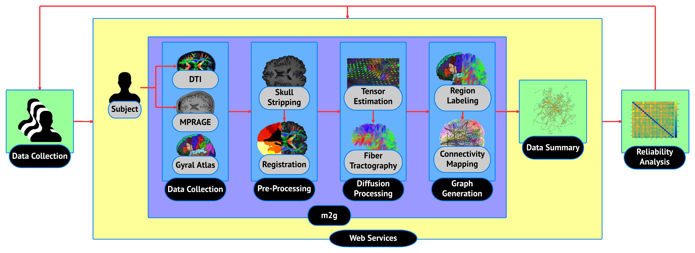

m2g: Framework for robust, reliable MR connectome estimation

This page describes how brain graphs are generated in our service from Diffusion Weighted MRI (dMRI), and structural MRI (sMRI) images of human brains. The MRImages to Graphs (M2G) pipeline is the successor of MRCAP and MIGRAINE. M2G combines dMRI and sMRI data from a single subject to estimate a high-level connectome. The connectomes returned describe regions of connectivity within the brain at multiple levels of resolution - from a single voxel scale ~1 mm3 to large cortical regions ~20 cm3.
M2G has been developed in the LONI pipelining environment. This environment enforces that the pipeline be modular in construction, and all created workflows and modules are command-line executable. This makes M2G efficient and allows users or researchers to modify algorithms for their specific requirements.
Download this project as a .zip file
Download this project as a tar.gz file
Documentation¶
Tutorials¶
Further Reading¶